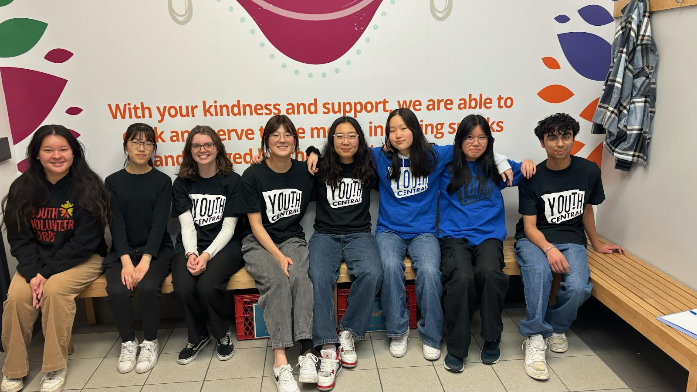
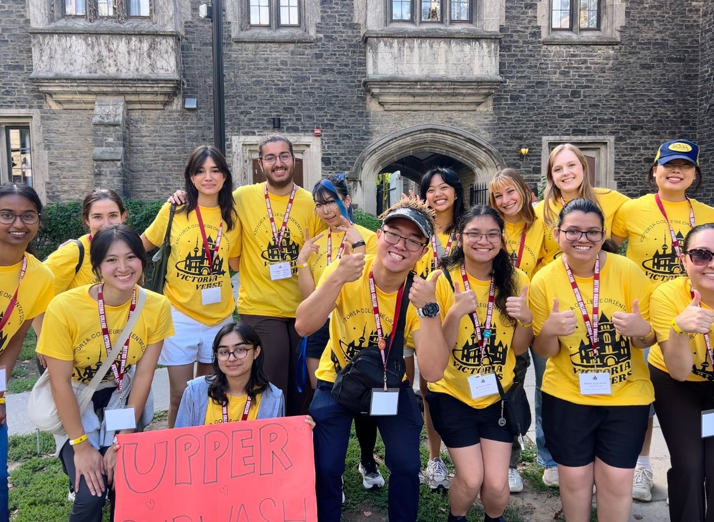
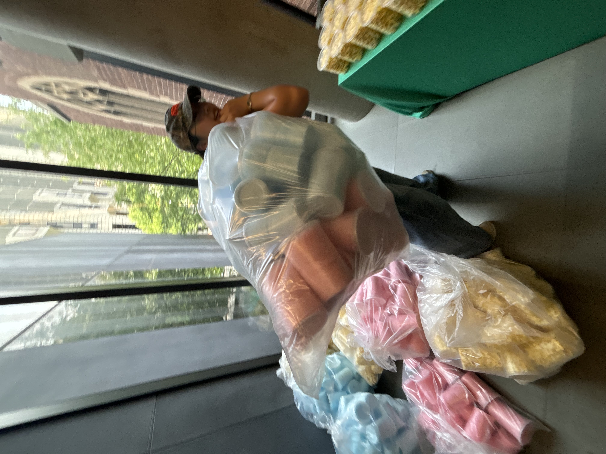

← Back to Passions

Volunteering
Volunteering is my way of surrounding myself with good people inspiring myself with the good part of humanity, and also having fun.



My Experiences
I've done lots of community service volunteering, including the food bank, The Salvation Army, Inn from the Cold, Calgary Heritage Park, and more. My most memorable experience was when I had the honour to organize a birthday party for children at the Inn from the Cold shelter. This became the foundation of my goals that whatever I do as a career, I want it to have a positive impact to society and the community.